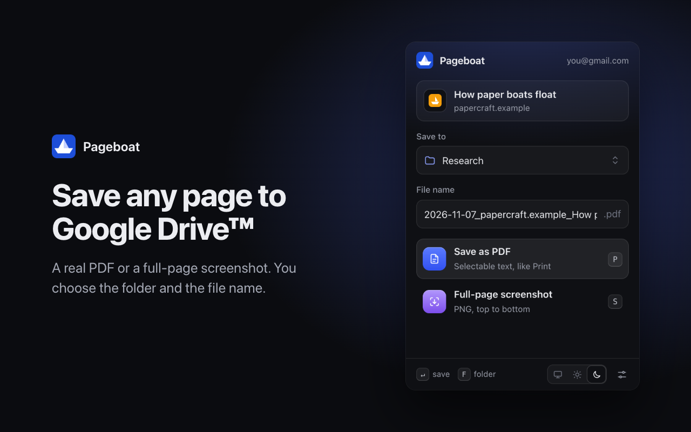

Save any page to Google Drive™
Pageboat is a browser extension for Chrome, Edge, Brave and other Chromium browsers. It saves the page you are reading to your Google Drive as a PDF or a full-page screenshot, or saves a file from a link. You pick the folder and the file name.

What it does
- Real PDFs. Text in the PDF can be selected and searched, like with Print → Save as PDF.
- Full-page screenshots. The whole page from top to bottom in one PNG image.
- Files from links. Right-click a link, an image or a video and save the file straight to Google Drive.
- Your folders and names. Search your Pageboat folders or create a new one as you type. Set a file name pattern with the date, site and page title.
- Keyboard first. P saves a PDF, S a screenshot, F opens the folder list.
Your data
Pageboat has no servers. Files go from your browser straight to your Google Drive. Pageboat can only see the files and folders it created itself, not the rest of your Drive. Read the privacy policy.
Contact
Questions or problems: michael.lozinsky@gmail.com